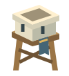
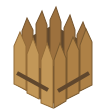

KING'S LANDING
PREPARING THE ISLAND
LOADING...
BUILD
1 / 6
0
⚙
↻
+
–
CLICK HERE

Archer Tower
15 gold

Barricade
10 gold
READY
PLACE YOUR CASTLE
Castles require a flat 2×2 area
OPTIONS
SOUND
100%
RESUME
THE ISLAND FELL
NEXT ISLAND
RESTART WAVE
RESTART LEVEL
DEV
booting
sat
contrast
vignette
grid